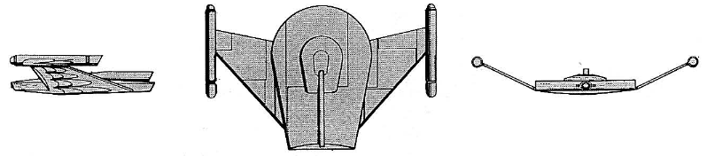

V-9 Night Flyer-class Scout (RSE)

Battle Stats
Engines and Superstructure
Total Power Units - 36 (Warp Engines - 2x15, Impulse Engines - 6)
MPR - 3/2
Superstructure - 15
Maximum Warp - 1
Industry Points to Build - 3
Beam Weapons (Disruptors)
Max Power - 6
Firing Chart - T
Arcs - 2F/P/S, 2A
Bonuses - +2(1-18)
Missile Weapons (Plasma Torpedoes)
Power to Arm - 10
Damage - See chart
Firing Chart - E
Arcs - 2F
Deflector Shields
Max Shield Power - 9
SPR - 1/3
Plasma Torpedo Damage Chart
Range | Damage
1 | 24
2 | 20
3 | 20
4 | 16
5 | 16
6 | 12
7 | 8
8 | 4